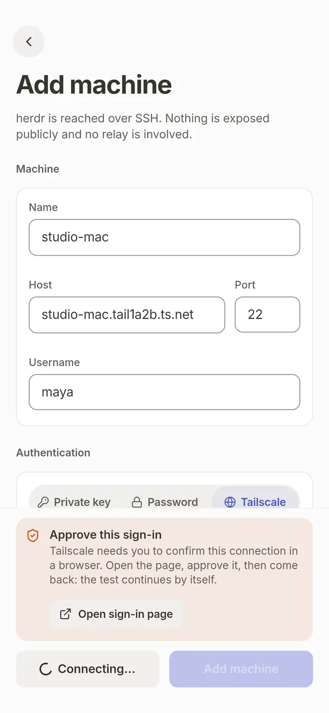
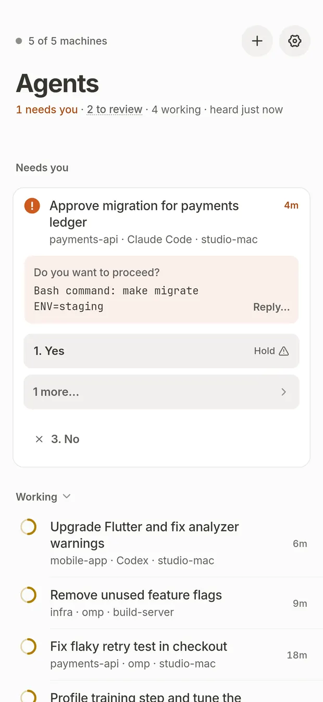
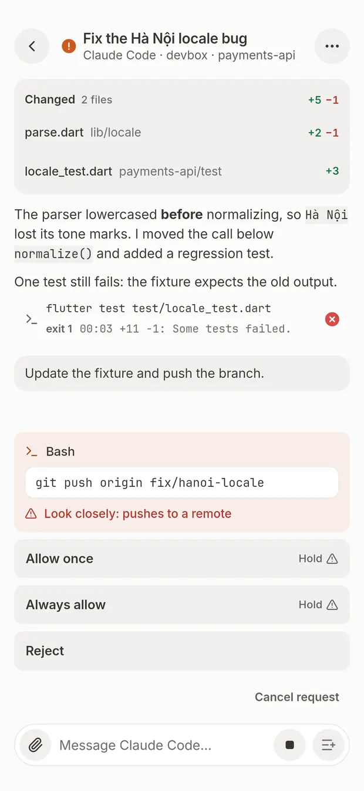

herdr mobile / Guide
Approve Claude Code from an Android phone
Claude Code stops and asks before it runs a command. If you are away from your desk, it waits. This sets up your phone to show who is waiting, the exact command, and a way to answer.
What you need
- An Android 7.0 or newer phone (32- or 64-bit ARM). There is no iPhone version.
- A Linux or macOS computer that runs your agents, with
sshdthe phone can reach: same network, a VPN, or Tailscale. Windows computers are not supported. - herdr running on that computer. herdr is the terminal workspace the app reads agents from.
- Claude Code installed on the computer, as you already have it.
There is no relay, no public port and no account. If the phone can reach the computer's SSH port, the app works. If it can't, nothing else can either.
1. Run Claude Code inside herdr
Start claude in a herdr pane as you normally would. herdr then sees the agent and the app can list it. For Claude Code, herdr's hook has to report the session if you also want the chat view. The app offers to install it from the terminal's pane options.
2. Install the app
- On the phone, open the latest release and download
herdr-mobile-<version>.apk. - Optional, recommended: check it against the release's
SHA256SUMSon a computer.sha256sum --check --ignore-missing SHA256SUMS - Open the APK and allow installs from that source. Later versions update from inside the app.
3. Add your computer
In the app, open Machines and tap +. Fill in a name, the host the phone can reach, the SSH port and the user that runs herdr. Then pick how to sign in:
- Tailscale. Nothing is stored. The Tailscale app must be connected, and the computer must run Tailscale SSH. A Mac using the Tailscale apps cannot, so use a key or password with its Tailscale address.
- Private key. Tap Generate key. The app makes an Ed25519 key on the phone and copies a one-line command. Run it once on the computer:
mkdir -p ~/.ssh && chmod 700 ~/.ssh && echo 'ssh-ed25519 AAAA… herdr-mobile@name' >> ~/.ssh/authorized_keys && chmod 600 ~/.ssh/authorized_keys - Password. The SSH password, kept in the Android keychain.
Tap Test connection. It should say Connected with the herdr version. The first connection pins the computer's host key, and a changed key later is a hard stop.

4. See who is waiting
The board lists every agent on every computer, grouped by what it needs: needs you, working, to review, idle. When Claude Code asks a question the app understands, its options appear as buttons on the card, with the command it wants to run under the question.


5. Approve, with a hold for risky answers
- Read the command first. It stays on screen. A long command says how many lines are below and opens in full.
- Harmless answers send on a tap.
- Risky answers need a hold of about 0.7 seconds. A push, a delete, or "always allow" will not send on a tap. A tap only shows the reason.
- Nothing is approved for you. There is no approval on a timeout and none by default.
- The app re-reads the question just before it sends. If you already answered on your computer, nothing is sent and you see the new question.
You can try the hold in your browser on the home page.
6. Optional: notifications
Notifications are off by default. Turn them on in Settings, Notifications. Android then shows a quiet "Watching" notice while agents work or wait, and the app keeps its connections open. Tapping a notification opens that agent. This costs battery while agents work, and that cost has not been measured. Without notifications, connections close about 90 seconds after you leave the app, and your agents keep running on the computer.
Limits
- Android only. Linux and macOS computers only.
- Claude Code approvals are verified on a computer, not on a phone yet. Codex chat works but its approvals are unverified. pi is built and has no verified turn.
- Answer buttons on notifications have not been tested on a real phone.
- A terminal pane is read-only text, with herdr's 1,000 rows of scrollback at most.